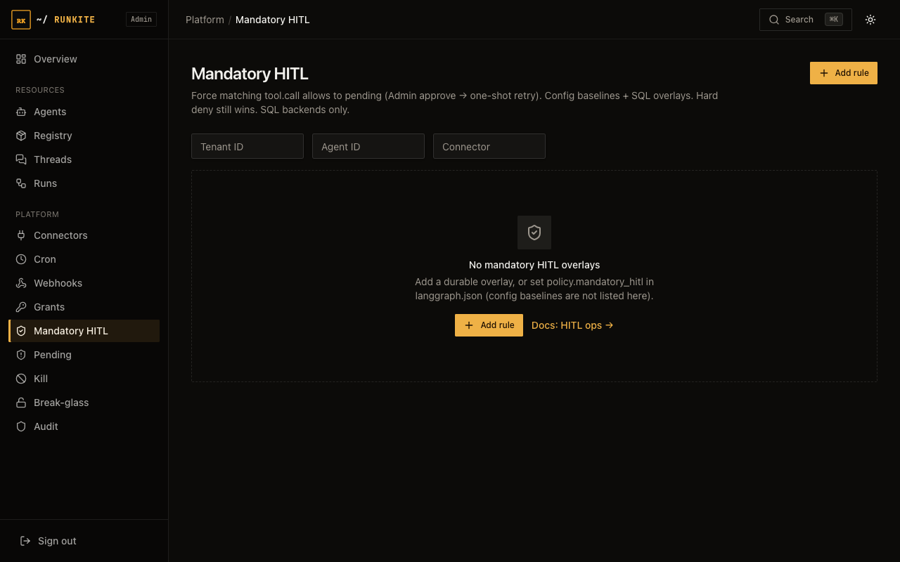
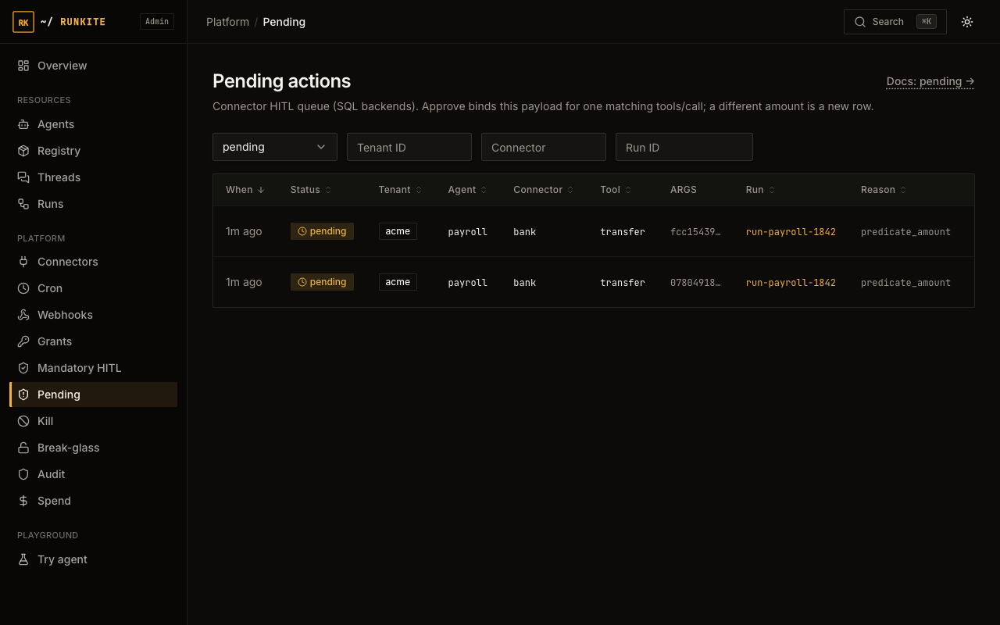
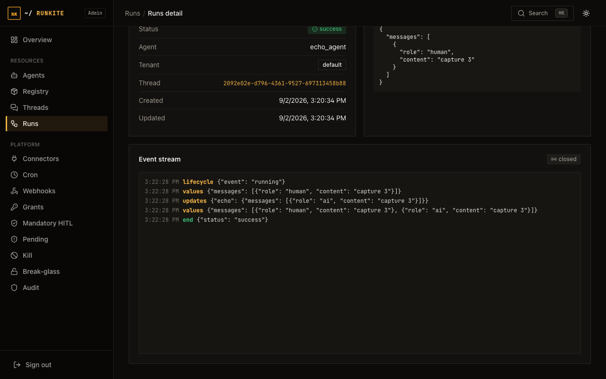

Govern
HITL ops
Two human gates look similar in demos and are easy to mix up: graph interrupt/resume (agent protocol) vs connector Pending (plane policy). Operators need both; they are not the same button.
Graph interrupt
The agent graph pauses (interrupted). Client or Admin resumes with
{"command":{"resume":…}} on the same thread/run. Used by Try’s approval_agent.
No connector grant required.
Connector Pending
A tool call hits grants / mandatory HITL / PDP pending. Row appears in Admin → Pending.
Approve mints a one-shot capability; deny blocks. SQL backends only (Mongo → 501).
How to operate
- Interrupted run — open Run detail / stream; resume via API or continue the client session. Not the Pending page.
- Pending row — Admin → Pending → Approve or Deny. Agent retries the tool after approve.
- Mandatory HITL — rules force pending even when a grant would allow; configure under Mandatory HITL.
- Audit — policy decisions searchable on SQL.
In the product
Admin → Mandatory HITL — force pending even when a grant would allow

Admin → Pending — approve or deny gated connector / tool calls

Run detail — use this surface for graph interrupt / event replay

What to expect
- Empty Pending — normal if you only used graph interrupt (Try path).
- Approve is one-shot — next matching call needs a new decision unless grants change.
- Break-glass — can skip Decide (and mandatory HITL); kill/authz/limits still apply.